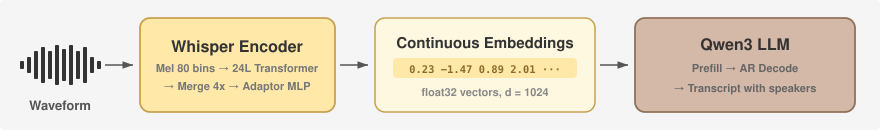
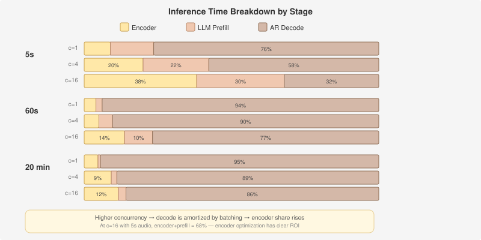
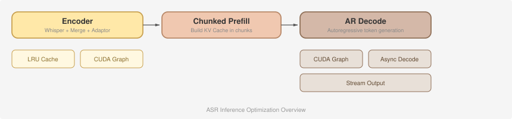

MOSS-Transcribe-Diarize#
MOSS-Transcribe-Diarize is a multi-speaker ASR and diarization model from the OpenMOSS team.
MOSS-Transcribe-Diarize does not support /v1/audio/translations; that endpoint returns HTTP 400. Use /v1/audio/transcriptions.

It transcribes speech, assigns speakers, and predicts timestamps in a single generation pass. With 128K context, it supports up to ~90-minute audio, handles meetings, interruptions, long conversations, and overlapping speech, and adds hotword boosting for names, companies, product terms, and domain vocabulary. MOSS-Transcribe-Diarize is served through the OpenAI-compatible /v1/audio/transcriptions endpoint.
Component |
Spec |
|---|---|
Architecture |
|
Audio encoder |
Whisper encoder (24 L, d_model=1024) |
Text decoder |
Qwen3 (28 L, hidden=1024, GQA 16/8) |
Output |
Speaker-labelled transcript with start/end timestamps |
Endpoint |
|
Architecture and Optimization#
MOSS-TD (short for MOSS-Transcribe-Diarize) is served through SGLang-Omni for two reasons. First, SGLang-Omni’s multi-stage pipeline is a natural fit — ASR follows the same encoder → prefill → decode pattern that the framework already orchestrates for TTS. Second, ASR is a category of multimodal-input models, and many of the optimizations we have built in SGLang-Omni (CUDA Graph capture, async decode, continuous batching, KV cache management) transfer directly to the ASR setting.
Inference Pipeline#

MOSS-TD follows the Audio LLM pattern: a Whisper encoder produces continuous embeddings, which are projected into a decoder-only LLM that autoregressively generates the transcript.
Encoder. Waveform → log-mel spectrogram (80 bins) → 24-layer Whisper Transformer → 4× Time Merge (concatenate every 4 frames) → VQAdaptor MLP (4096→1024). The output is a sequence of continuous float vectors in the LLM’s embedding space. (The “VQ” name is a misnomer — no vector quantization is involved.)
LLM Prefill. The audio embeddings replace
<|audio_pad|>tokens in the prompt. Qwen3 processes the full prompt in one parallel forward to build KV cache.AR Decode. Qwen3 generates text tokens (transcript with speaker labels and timestamps) one at a time until EOS.
For long audio (up to ~90 min), the token sequence after encoding can reach tens of thousands of tokens. Chunked Prefill splits it into 4096-token chunks, processing one per scheduling step and interleaving decode steps for other requests between chunks. Stream output is suppressed during chunked prefill to avoid emitting intermediate states.
ASR vs TTS#
ASR and TTS share much of the same serving infrastructure in sglang-omni — both use OmniScheduler for scheduling, share CUDA Graph / KV Cache management / continuous batching, and are built on the same Qwen3 LLM backbone. The key differences lie in what they encode, what they generate, and how their pipelines are structured:
Dimension |
ASR (MOSS-TD) |
TTS (Higgs / MOSS-TTS) |
|---|---|---|
Audio representation |
Continuous features (mel spectrogram → encoder hidden states) |
Discrete codec tokens (RVQ multi-codebook encoding) |
Data flow |
Audio → text |
Text → audio |
Decoder / Vocoder |
Not needed — output is plain text |
Vocoder required to reconstruct waveform from codec tokens |
Typical input length |
Can be very long (MOSS-TD supports ~90 min) |
Usually short (reference voice: a few seconds) |
Pipeline stages |
Single stage (encoder + LLM) |
Multi-stage (preprocessing → AR engine → vocoder) |
Streaming |
Stream output (incremental text); streaming input is possible via cumulative chunking but not yet optimized — a new encoder architecture with native streaming in/out support is in development |
Stream output (incremental audio) + streaming vocoder |
These differences shape optimization priorities: ASR optimization focuses on the AR decode loop (which dominates latency) and long-sequence memory management, while TTS optimization additionally targets vocoder batching/streaming and multi-codebook generation strategies. For the full TTS optimization story, see Optimizing TTS Inference.
Where Time Is Spent#
AR Decode dominates at low concurrency, but at high concurrency decode gets amortized by batching and encoder share rises — especially for short audio.
Profiling on a single H100 (CUDA Graph, bf16), showing the percentage breakdown across all three stages:
Audio length |
Concurrency |
Encoder |
LLM Prefill |
AR Decode |
|---|---|---|---|---|
5 s |
1 |
8.9% |
14.7% |
76.4% |
5 s |
4 |
20.0% |
22.3% |
57.7% |
5 s |
16 |
38.2% |
29.7% |
32.1% |
60 s |
1 |
4.0% |
2.1% |
94.0% |
60 s |
4 |
5.0% |
4.6% |
90.4% |
60 s |
16 |
13.7% |
9.5% |
76.8% |
20 min |
1 |
4.7% |
0.8% |
94.5% |
20 min |
4 |
9.2% |
1.9% |
88.9% |
20 min |
16 |
11.6% |
2.6% |
85.7% |

At c=1 with longer audio, AR Decode takes 94%+ of total time — the leverage is almost entirely in the decode loop. At c=16 with short audio, encoder + prefill together account for 68%, making encoder-side optimizations (CUDA Graph capture, Torch Compile, caching) worthwhile.
Optimization Strategies#

The optimization stack mirrors what we built for TTS, sharing the same core infrastructure with ASR-specific adaptations.
CUDA Graph. The LLM decode step pads batch size to predefined buckets (1, 2, 4, 8, …) and replays a captured CUDA graph, eliminating kernel launch overhead on every token. This is the single biggest optimization for AR Decode. Breakable prefill graphs bucket over token count instead, and the ladder starts at 1 and 2: a fully cached prefix still re-prefills its last token, and that 1-token extend would otherwise pad to the 4-token floor and exceed SGLang’s 2x padding guard, falling back to eager. The 2-token bucket sits exactly on that guard, so it replays either way and only saves the padding. The Whisper encoder gets the same treatment, bucketed over chunk count (encoder_chunk_buckets, default 1..8 ≈ 4 min of audio).
Decoder Torch Compile. The default pipeline compiles Qwen3 decoder shapes through batch size 4 and uses the eager decoder above that cap. Override the cap with --torch-compile-max-bs, or disable decoder compilation with --torch-compile off. Compilation runs once per captured decode bucket at startup (max-autotune-no-cudagraphs), so cold start pays an autotuning cost before the server accepts traffic. This setting is independent of the encoder compile option below.
Encoder Torch Compile (opt-in). encoder_torch_compile=True swaps the encoder CUDA graph for torch.compile (default mode) with kernel fusion. The two are mutually exclusive. Reduce-overhead mode must not be used: its cudagraph trees corrupt memory alongside the decode CUDA graphs that always run in this process (illegal memory access after ~60s of serving). The cost is a one-time per-bucket compile at startup; dynamic=False means only the warmed chunk counts are accelerated, anything else runs eager.
Async Decode. Same one-step lookahead as TTS: launch the current decode step’s GPU work, then resolve the previous step’s host-side work (D2H copy, finish detection, result dispatch) in parallel. MOSS-TD enables lookahead starting at batch size 1 by default. Set --async-lookahead-min-batch-size 2 to keep batch-size-1 decode synchronous, or use --decode-mode sync to disable lookahead for the stage. Two alternating pinned host buffers prevent read/write races between the GPU’s async D2H write and the CPU’s read. For the full mechanism and code pointers, see Asynchronous Decode + Lookahead in the TTS optimization guide.
LRU Encoder Cache. The Whisper encoder forward is deterministic for identical input audio — same waveform always produces the same embeddings. We exploit this with an LRU cache (max 64 entries, 4 GB budget) that stores encoder outputs on CPU, keyed by a content hash of the input waveform. On a cache hit the stored tensor is transferred back to GPU asynchronously, skipping the encoder entirely. On a miss the encoder runs normally and the result is moved to CPU for storage. The cache evicts by both entry count and total bytes, always dropping the least-recently-used entry first.
Unlike TTS where the same reference voice is reused across many prompts (high hit rate), ASR inputs are typically unique in production. The cache is most useful for request retries, A/B testing with different decoding parameters, and development iteration.
Stream Output. Emits transcript text incrementally during AR decode via SSE, so users see partial results as they are generated rather than waiting for the full sequence. Three mechanisms control when to emit:
Rate limiting (default 50 ms): tokens accumulate in a per-request buffer and are flushed only when enough time has elapsed since the last emit. The very first token goes out immediately; EOS always triggers a flush regardless of timing.
Chunked prefill suppression: during chunked prefill (prompt chunks still being processed), all emission is suppressed to prevent intermediate states from being misinterpreted as transcript output.
Incomplete UTF-8 handling: accumulated tokens are decoded together. If the result ends with the Unicode replacement character (indicating an incomplete multi-byte sequence split across token boundaries), emission is held until the next token completes the sequence.
Model Usage#
Launching Commands#
Install sglang-omni by following Installation, then download the model:
hf download OpenMOSS-Team/MOSS-Transcribe-Diarize
Serve the model:
sgl-omni serve \
--model-path OpenMOSS-Team/MOSS-Transcribe-Diarize \
--port 8000 \
--max-running-requests 16 \
--cuda-graph-max-bs 16 \
--mem-fraction-static 0.80
MOSS-TD briefly holds newly built LM requests to admit larger prefills. The
default target is 4 requests with a 12 ms oldest-request deadline. While more
request builds are pending, the scheduler waits for either limit; after build
work drains, it releases immediately only when decode is idle. During active
decode, it continues coalescing until the target or deadline. Override the two
limits with --prefill-coalesce-requests and --prefill-coalesce-wait-ms, or
set the request target to 0 to disable coalescing.
Sending Requests#
Use response_format=verbose_json when you need parsed speaker segments. json returns the raw transcript text only.
curl -X POST http://localhost:8000/v1/audio/transcriptions \
-F model=OpenMOSS-Team/MOSS-Transcribe-Diarize \
-F file=@tests/data/query_to_cars.wav \
-F response_format=verbose_json
import requests
with open("tests/data/query_to_cars.wav", "rb") as f:
resp = requests.post(
"http://localhost:8000/v1/audio/transcriptions",
data={
"model": "OpenMOSS-Team/MOSS-Transcribe-Diarize",
"response_format": "verbose_json",
},
files={"file": ("query_to_cars.wav", f, "audio/wav")},
timeout=300,
)
resp.raise_for_status()
payload = resp.json()
print(payload["text"])
for segment in payload.get("segments", []):
print(
f"[{segment['start']:.2f}-{segment['end']:.2f}] {segment['text']}"
)
When a request omits max_new_tokens, the server sizes the output budget from the audio duration. The default is max(5120, 10 tokens per audio second), so a 60 minute recording gets a 36000 token budget without any client changes. Operators can pin a fixed max_new_tokens in the stage config, which disables duration scaling for requests that omit the field. An explicit max_new_tokens in the request always wins over both defaults. The scheduler clamps the final value to the context remaining after the audio prompt, so large explicit values are safe to send. Set the field explicitly when you want a hard cap or a larger budget than the default, as in this example with a clip from the repo that has two speakers:
curl -X POST http://localhost:8000/v1/audio/transcriptions \
-F model=OpenMOSS-Team/MOSS-Transcribe-Diarize \
-F file=@docs/_static/audio/gaokao-listening.wav \
-F response_format=verbose_json \
-F max_new_tokens=65536
Request Parameters#
Parameter |
Type |
Default |
Description |
|---|---|---|---|
|
file |
required |
Audio file uploaded as multipart form data |
|
string |
server default |
Model identifier |
|
string |
unset |
Optional language hint |
|
string |
|
|
|
float |
model default ( |
Sampling temperature |
|
int |
duration scaled |
Max generated tokens. Omitted requests default to |
|
string |
unset |
Optional instruction override; omit to use the built-in transcribe+diarize prompt |
verbose_json parses the model markup into OpenAI-style segments with
start, end, and speaker-prefixed text (for example [S01]...).
json / text return the full transcript string without segment parsing.
Benchmarking#
Thanks to the Moss team for providing the benchmark datasets, we prepare movies800times, aishell4_long, and googletime as benchmark datasets for multi-speaker ASR. movies800times is a short-sequence dataset with 800 dialog clips, aishell4_long with googletime are long-sequence dataset of long-form meeting audio, and English podcasts. These datasets are right now under private license, and you can contact the Moss team for access.
# Short-sequence ASR / diarization
python -m benchmarks.eval.benchmark_asr_transcribe_diarize \
--dataset movies800times \
--concurrency 16 \
--max-running-requests 16 \
--cuda-graph-max-bs 16 \
--mem-fraction-static 0.80 \
--output-dir results/moss_transcribe_diarize_movies800times
# note (Xinyu): Add one dedicated request-event profiling pass after the measured
# evaluation. This pass is excluded from reported accuracy and speed metrics.
python -m benchmarks.eval.benchmark_asr_transcribe_diarize \
--dataset movies800times \
--concurrency 16 \
--profile-events \
--profile-event-dir /tmp/moss_td_bench_profile \
--output-dir results/moss_transcribe_diarize_movies800times_profile
# Long-sequence ASR / diarization
python -m benchmarks.eval.benchmark_asr_transcribe_diarize \
--dataset aishell4_long \
--concurrency 16 \
--max-running-requests 16 \
--cuda-graph-max-bs 16 \
--mem-fraction-static 0.80 \
--max-new-tokens 65536 \
--request-timeout-s 1800 \
--output-dir results/moss_transcribe_diarize_aishell4_long
# Long-sequence English podcast ASR / diarization
python -m benchmarks.eval.benchmark_asr_transcribe_diarize \
--dataset googletime \
--concurrency 16 \
--max-running-requests 16 \
--cuda-graph-max-bs 16 \
--mem-fraction-static 0.80 \
--max-new-tokens 65536 \
--request-timeout-s 1800 \
--output-dir results/moss_transcribe_diarize_googletime
--profile-events starts request-level event recording through the serve
profiler endpoints, runs one extra pass, and adds its stage_breakdown,
hop_breakdown, and speed metrics under profile in both
transcribe_diarize_results.json and transcribe_diarize_speed_results.json.
The event directory is a server-side path, so report generation requires the
benchmark process to see the same filesystem. For router or DP deployments,
pass every worker serve URL with a comma-separated --profile-urls value.
Benchmark Results#
Here we provide the benchmark results of movies800times and aishell4_long on a single H100 80GB GPU. Each row is the mean of 3 runs against a server with max_running_requests=16, cuda_graph_max_bs=16, and mem_fraction_static=0.80.
movies800times#
Concurrency |
Throughput (req/s) |
Mean latency (s) |
RTF mean |
audio_s/s |
|---|---|---|---|---|
1 |
2.57 |
0.388 |
0.0612 |
29.76 |
2 |
4.89 |
0.409 |
0.0659 |
56.55 |
4 |
6.62 |
0.513 |
0.0790 |
76.64 |
8 |
6.80 |
0.533 |
0.0810 |
78.70 |
16 |
7.08 |
0.659 |
0.0922 |
81.98 |
aishell4_long#
Concurrency |
Throughput (req/s) |
Mean latency (s) |
RTF mean |
audio_s/s |
|---|---|---|---|---|
1 |
0.022 |
45.2 |
0.0197 |
50.64 |
2 |
0.032 |
60.7 |
0.0265 |
74.25 |
4 |
0.036 |
105.6 |
0.0461 |
81.64 |
8 |
0.040 |
172.6 |
0.0754 |
90.62 |
16 |
0.043 |
282.8 |
0.1237 |
98.83 |
Concurrency — Maximum number of in-flight client requests (
--concurrency).Throughput (req/s) — Completed requests divided by total benchmark wall-clock time.
Mean latency — Average end-to-end time per request (send to full response received).
RTF mean — Average ratio of processing time to input audio duration per request.
<1is faster than real time.audio_s/s — Total seconds of input audio processed divided by total benchmark wall-clock time.
To reproduce the results, follow the commands above or the entry point in benchmark_asr_transcribe_diarize.py.
Acknowledgments#
Thanks for the joint effort of the OpenMOSS team and SGLang Omni team.
MOSS Team: Donghua Yu, Zhengyuan Lin, Hanfu Chen, Yiyang Zhang, Yang Gao, Zhaoye Fei, Qinyuan Cheng, Shimin Li, Xipeng Qiu
SGLang Omni Team: Yijiang Tian, Xinli Jing, Xiangrui Ke, Zhihao Guo, Ruoqi Zhang, Lifan Shen, Jintao Qu, Xuxiang Tian, Kaige Li, Ratish P, Haoguang Cai, Zijie Xia, Chenchen Hong, Xuesong Ye, Jingwen Gu, Jiaxin Deng, Jiaxuan Luo, Xinyu Lu, Hao Jin, Chenyang Zhao, Yichi Zhang